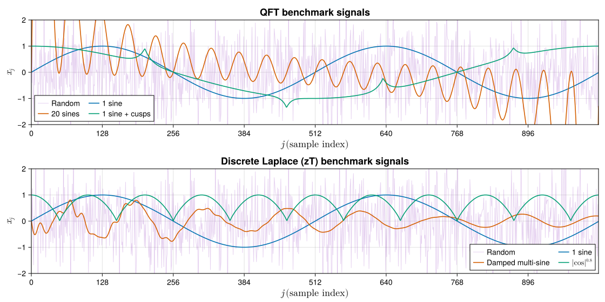
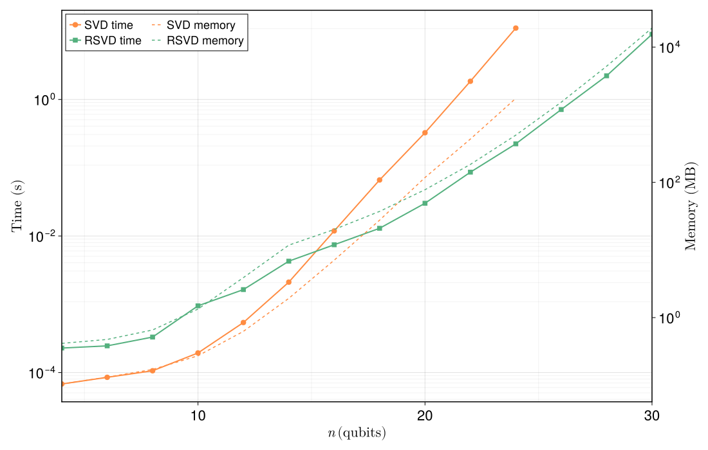
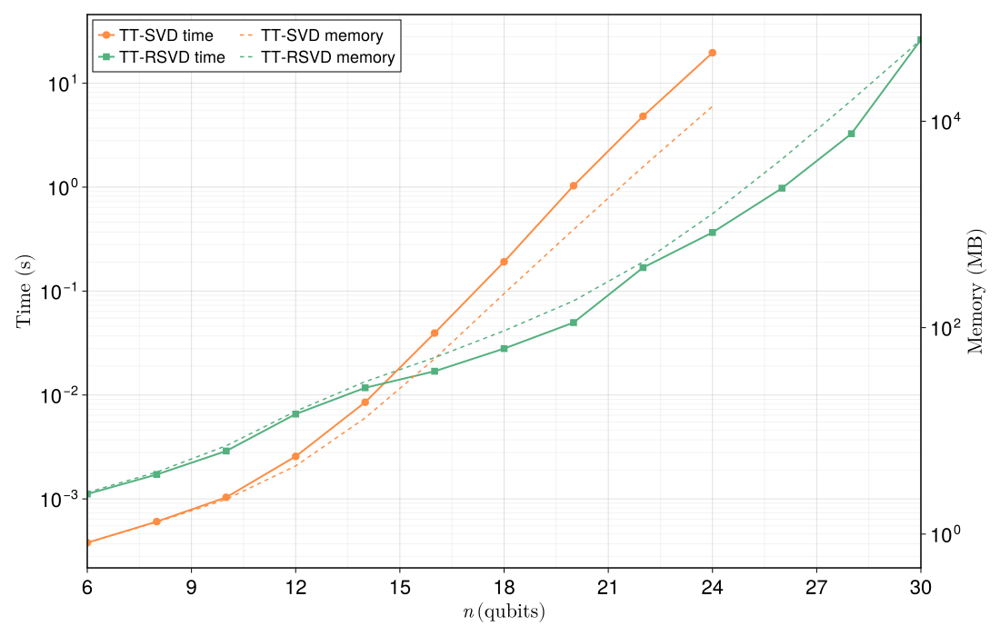
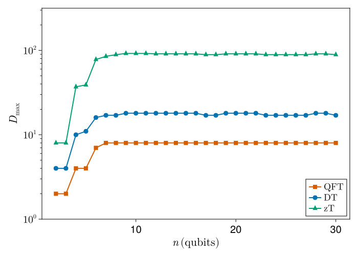
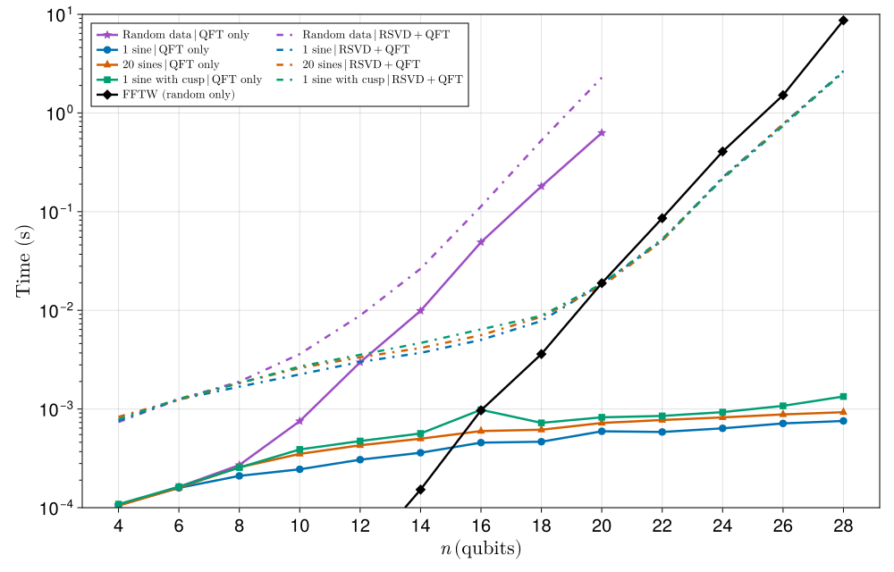
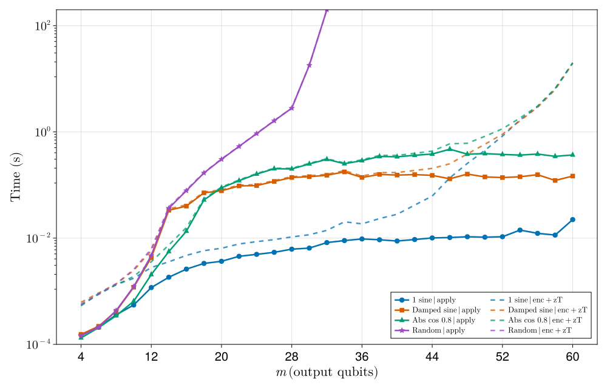

Benchmarking
This page quantifies where QILaplace.jl pays off and where it does not. Every figure below is produced by a standalone Julia script, run once on a reference machine. None of it is re-executed during Documenter builds, so the numbers you see are exactly the ones that were measured.
Methodology
All runs reported here use Julia 1.11.6, ITensors.jl, and the default LinearAlgebra/BLAS stack on an Apple M2 Max (12 cores, 64 GB RAM) with 1 Julia thread and 8 BLAS threads. Measurements are collected with BenchmarkTools.@benchmark; each reported point is the mean of multiple samples after a discarded warm-up evaluation. Random tensors and signals use a fixed RNG seed (Xoshiro(seed + n)), so re-runs on the same hardware are reproducible to within a few percent.
We adopt the notation from the core concepts: a signal of length $N = 2^n$ lives on $n$ qubits; paired-register operators such as the discrete Laplace (zT) MPO act on $m = 2n$ output qubits; $\chi_s$ denotes the signal MPS bond dimension, $\chi_c$ (equivalently $D_{\max}$) denotes the MPO bond dimension.
Reproducing these plots locally
Every number on this page can be re-generated on your own machine. All data and figures live under scripts/benchmark/, with a detailed walk-through in scripts/benchmark/README.md. The short version is:
julia --project=scripts/benchmark -e 'using Pkg; Pkg.develop(path="."); Pkg.instantiate()'
julia --project=scripts/benchmark scripts/benchmark/<runner>.jl
julia --project=scripts/benchmark scripts/benchmark/plot_<figure>.jlEach runner writes a JLD2 artifact into scripts/benchmark/results/ and is incremental: re-invoking the script appends missing n values to the existing artifact rather than starting from scratch.
The parameters you are most likely to touch live at the top of each runner:
N_RANGE— the qubit sweep, e.g.2:1:30. Shrink this if you only have a few minutes; extend it (and raiseTIME_TO_STOP) to push into the memory-bound regime.CUTOFF— singular-value truncation threshold used for MPS / MPO compression. Defaults to1e-12for QFT and1e-15for zT to match the companion paper; looser cutoffs give smaller bond dimensions but larger reconstruction error.MAXDIM— hard cap on any bond dimension that the compressor returns.RSVD_K,RSVD_P,RSVD_Q— target rank $k$, oversampling $p$, and power iterations $q$ of the randomised SVD (see RSVD notes). Structured signals use the globalRSVD_K; for pure random sighal sampled from a Gaussian distribution (:random) the runners set $k = 2^{\lfloor n/2\rfloor}$, the maximum possible Schmidt rank across the middle bipartition, so that bond growth is not artificially capped.TIME_TO_STOP— per-method wall-clock budget. Once a method exceeds it at somen, largernare skipped for that method but other methods keep going.COMP_METHOD— single toggle (:svdor:rsvd) that selects the compression backend used insidesignal_mps/signal_ztmps. Flipping this and re-running reproduces the “SVD-only” variant of every plot.ZT_BENCH_RANDOM_NS(zT runner only) — environment variable used to re-sweep just the:randomseries over a restricted range, e.g.ZT_BENCH_RANDOM_NS=2:16, without re-running the structured signals.REBENCHMARK— if set totrue, clears the in-memory series and re-benchmarks from scratch; otherwise the existing artifact is reused.
Raw results (.jld2) and figures (.svg) are committed to the repository, so you can rerun only the plot scripts and still get the same plots. The JLD2 artifacts carry a meta dict (Julia version, CPU, BLAS threads, parameter values); if you change any parameter in the runner the loader detects the mismatch and starts a fresh sweep for the affected series.
1. Benchmark signals
Before looking at any timing curve it helps to know what data we are encoding. The two runners qft_vs_fftw.jl and zt_full_runtime.jl draw their inputs from a small library of signal kinds (make_signal(kind, n) in scripts/benchmark/common.jl). Figure 1 shows every family at $n = 10$ ($N = 1024$ samples):

Figure 1. Time-domain waveforms of every benchmark signal family at $n = 10$ ($N = 1024$ samples). Top panel: signals used by the QFT vs. FFTW benchmark (one sine, twenty sines, one sine with a cusp, and random data). Bottom panel: signals used by the end-to-end discrete Laplace benchmark (single sine, damped multi-sine, $|\cos|^{0.8}$, and random data). Structured waveforms are highly compressible and admit small $\chi_s$; the :random signal is the pathological case that saturates the full Schmidt rank $\chi_s = 2^{n/2}$ at the middle bipartition.
2. Randomised SVD vs. standard SVD
The single most expensive operation in the MPS pipeline is a truncated SVD of one bipartition of a large tensor. The Quantics representation places that bipartition at a balanced index split, which is the regime where randomised SVD delivers its biggest savings. scripts/benchmark/svd_rsvd_itensor.jl takes a single random rank-$n$ ITensor of shape $(2,2,\dots,2)$ with $N = 2^n$ entries, bipartitions it down the middle, and benchmarks ITensors.svd (the reference deterministic truncated SVD) against QILaplace.RSVD.rsvd (the randomised kernel used throughout the library, with oversampling $p = 5$, power iterations $q = 2$, and target rank $k = 100$). Mean wall time (left axis, solid) and mean allocated memory (right axis, dashed) are shown below.

Figure 2. Kernel-level comparison of deterministic SVD and randomised SVD on a single middle bipartition of a dense random ITensor of size $(2,2,\dots,2) = 2^n$.
Recall from the core concepts discussion that a dense truncated SVD of a $2^{n/2} \times 2^{n/2}$ matrix costs $O(N^{3/2}) = O(2^{3n/2})$, whereas the randomised projector reduces this to $O(k \cdot N) = O(k \cdot 2^n)$ once $k \ll 2^{n/2}$. Below roughly $n \le 14$ this asymptotic picture is invisible: randomised SVD runs an entire chain of subroutines (draw a Gaussian-random test matrix, perform $q$ power iterations of matrix-matrix multiplication, take a QR decomposition, and then a small dense SVD of the projected $k \times k$ block), whereas deterministic SVD executes exactly one LAPACK call, so the constant-factor overhead of the randomised pipeline dominates. The two curves cross near $n = 16$, and above that crossover the gap widens exponentially because the cubic LAPACK cost overtakes all overheads: at $n = 24$ exact SVD takes $11.09\,\mathrm{s}$ and allocates $\sim\!1.75\,\mathrm{GB}$, while RSVD finishes the same bipartition in $0.224\,\mathrm{s}$ with $\sim\!500\,\mathrm{MB}$ of working memory — a $\sim\!50\times$ wall-time speedup and $\sim\!3.5\times$ memory reduction on a single kernel invocation. This is exactly the behaviour expected from the two complexity formulas above and is the reason why signal_mps / signal_ztmps default to method = :rsvd once the middle bond grows past the crossover.
3. MPS conversion of a random signal
Figure 2 timed a single bipartition. The workload that actually appears in practice is the full left-to-right TT sweep performed by signal_mps, which chains $n - 1$ such bipartitions. scripts/benchmark/tt_decomp.jl runs that sweep on a length-$2^n$ random vector — the worst case, because a random signal has no low-rank structure and saturates every Schmidt spectrum — with both the :svd and :rsvd backends, using the same cutoff and target rank as the single-shot benchmark above. The number of singular vectors(bond dimensions) computed by the RSVD algorithm at each step is $k = 55$.

Figure 3. Full MPS construction (signal_mps) on a random length-$2^n$ signal. Wall time (left axis, solid) and allocated memory (right axis, dashed) for deterministic SVD and randomised SVD.
The overall shape of Figure 3 mirrors Figure 2: the total cost is a constant times the cost of the dominant middle bipartition, consistent with the $O(n \chi^3)$ TT-sweep runtime recalled in the core concepts page (for random data the bond at site $i$ scales as $\chi_i = \min(2^i, 2^{n-i})$, and the middle bond dominates). The qualitative difference lies in the bond dimension: deterministic SVD allows $\chi$ to grow to its full Schmidt value $2^{n/2}$, which at $n = 20$ already means $\chi = 1024$, so the SVD TT sweep pays the cubic cost of an uncompressible state. Randomised SVD, by contrast, is intrinsically rank-capped, returning at most $k$ singular values by construction. At $n = 24$ this manifests as $19.67\,\mathrm{s}$ and $\sim\!14\,\mathrm{GB}$ of allocations for signal_mps(:svd) versus $0.37\,\mathrm{s}$ and $\sim\!1.3\,\mathrm{GB}$ for signal_mps(:rsvd): a $\sim\!50\times$ wall-time and $\sim\!11\times$ memory improvement. The RSVD speed-up is not free accuracy. MPS data generated by SVD has full rank, whereas the RSVD produces a rank-$k$ cap that results in a lossy compression.
4. MPO bond dimension scaling: QFT, DT, zT
Once we have an MPS encoding of the input, the rest of the transform is contracting it with a precompiled MPO. For every figure henceforth, we separate two classes of cost:
- Core compute — time spent inside the dominant kernel (e.g.
apply(W, ψ), a single SVD, a full TT sweep). - End-to-end — core compute plus the time required to prepare the input MPS from a dense vector via
signal_mps/signal_ztmps. Building MPOs is treated as a one-time setup cost and is excluded from timed regions.
The runtime formula for apply(W, ψ) quoted throughout this package,
\[T_{\text{apply}} \;=\; O\!\left(n\, \chi_c^{\,2}\, \chi_s^{\,2}\right) \;=\; O\!\left(\chi_s^{\,2}\, \log N\right) \quad\text{for fixed circuit transform accuracy},\]
is only as good as the claim that the circuit bond dimension $\chi_c$ (the MPO's $D_{\max}$) is bounded independently of $n$. For generic circuits this claim may not hold. What makes QFT, DT, and zT tractable is fact that their singular values decay exponentially at every bond, and the specific compression procedure described in the core concepts page that we use to arrive at the final MPO. Each transform is expressed as a layered circuit whose gates are zipped into an MPO one layer at a time, and between layers we bring the partially combined MPO into a mixed canonical form via QR decompositions and truncate via SVD at every bond. Because each truncation is performed on a locally orthogonal tensor, the discarded singular values produce a provable local error bound, but optimized globally. As a consequence, the transform MPOs bond dimensions saturate for all the three circuits constructed as such.
We plot against the input qubit count $n$ for the single-register QFT and for the paired-register DT and zT operators.

Figure 4. Maximum bond dimension $D_{\max}$ of the compressed MPO as a function of the number of input qubits $n$, at a truncation cutoff of $10^{-15}$. Single-register QFT has output qubits $m = n$; paired-register DT and zT have $m = 2n$.
All three curves plateau. The QFT MPO saturates at $D_{\max} = 8$ for $m \ge 8$, reproducing the QFT result of Chen, Stoudenmire and White (2023). The Damping-Transform MPO saturates around $D_{\max} \approx 17\text{--}18$. The DT mixes two registers and is non-unitary, so its bond budget is a few times larger than QFT, but it is still a constant. The discrete Laplace MPO is the hardest of the three and saturates at $D_{\max} \approx 89\text{--}92$ from $m \gtrsim 18$ onwards; this is much larger than QFT or DT, but it is still $O(1)$ and not $O(2^{m/2})$, so it still becomes flat on the log-scale plot. Because all three $D_{\max}$ values are bounded, for any signal whose MPS is well represented in a finite $\chi_s$ the transform runtime is $O(\chi_s^{\,2} \log N)$, i.e. logarithmic in the dense problem size $N$.
5. End-to-end QFT vs. FFTW
With $D_{\max}$ bounded, the end-to-end QFT time on a compressible signal is set by two pieces: (i) RSVD-based MPS compression of the dense input, and (ii) MPO application once that MPS is available. Following the scaling analysis reported by Chen et al., if the maximum MPS bond is $\chi_m$, the full RSVD compression sweep scales as
\[T_{\mathrm{compress}} = O\!\left(\chi_m N + \chi_m^2 \sqrt{N}\right).\]
The dominant $\chi_m N$ term comes from the central-bond randomized projection (a $\sqrt{N}\times\sqrt{N}$ data matrix multiplied by a $\sqrt{N}\times\chi_m'$ random test matrix, with $\chi_m' - \chi_m \sim 5$–$10$), while the $\chi_m^2\sqrt{N}$ term is the subsequent small SVD/orthogonalization cost. Moving away from the center, the decomposed matrices shrink ($\sqrt{N}/2 \times 2\chi_m$, $\sqrt{N}/4 \times 2\chi_m$, etc.), which changes the prefactor but not the asymptotic form above. For bounded $\chi_m$, this is $O(N)=O(2^n)$ for input compression. The apply stage then contributes $O(n\chi_c^2\chi_s^2)=O(\chi_s^2\log N)$ with bounded $\chi_c$. The honest comparison against a dense FFT must include the encoding cost, because FFTW.fft already operates on a dense array. scripts/benchmark/qftvsfftw.jl does this for four signal families at fixed cutoff = 1e-12 and plots QFT only (apply(W, ψ) with a pre-built MPS, solid), RSVD encoding + QFT (signal_mps(:rsvd) followed by apply, dash-dotted), and the FFTW baseline on the random signal (black diamonds).

Figure 5. *End-to-end QFT runtime vs. FFTW. Solid curves: apply(W, ψ) with a pre-built MPS (QFT-only step). Dash-dotted curves: full pipeline, signal_mps(:rsvd) + apply. Black diamonds: FFTW fft on the random signal, shown once as the dense baseline. Vertical axis is log-scale.
For compressible inputs (:sin, :sine20, :sin_cusp) the QFT-only solid curves are essentially flat on this log-scale plot: the MPS has a $\chi_s$ that stops growing at a few tens, $D_{\max}$ plateaus at $8$, and the resulting $O(\chi_s^2 \log N)$ scaling is straight-line logarithmic. At $n = 28$ (i.e. $N = 2^{28} \approx 2.7 \times 10^8$ samples) the QFT-only apply costs roughly $0.8\,\mathrm{ms}$ on the single sine, and the full RSVD+QFT pipeline costs $\sim\!2.7\,\mathrm{s}$ — three orders of magnitude below the $\sim\!8.7\,\mathrm{s}$ that FFTW needs on a dense length-$2^{28}$ array. This reproduces the asymptotic advantage reported by Chen, Stoudenmire and White (2023): with bounded $\chi_s$, the RSVD-MPS compression front-end is $O(N)$ and the QFT apply back-end is $O(\log N)$, so the end-to-end trend is dominated by the near-linear encoding stage and can still asymptotically outperform FFTW's $O(N \log N)$ scaling at large enough $N$. Relative to their implementation, our apply kernel is faster (we perform raw tensor contractions through the precompiled MPO without compression inside apply) while our RSVD$\rightarrow$MPS conversion is slower.
The random signal tells the complementary story. Because a random vector has no low-rank structure, its MPS needs $\chi_s = 2^{n/2}$, which turns $O(\chi_s^2 \log N)$ into $O(N \log N)$ and erases the logarithmic advantage. The :random curves track FFTW's slope rather than the other QFT-only curves, and the RSVD+QFT variant is worse than FFTW on this family because we additionally pay the TT-sweep cost. We report this case explicitly: the asymptotic logarithmic scaling is a statement about structured signals, and the algorithm does not outperform FFTW on purely unstructured data.
6. End-to-end discrete Laplace (zT) transform
The discrete Laplace transform has no FFTW counterpart. The benchmark script scripts/benchmark/ztfullruntime.jl follows the same layout as qft_vs_fftw.jl: for each input qubit count n and each signal kind it builds a paired-register MPS with signal_ztmps, forms W = build_zt_mpo(ψ, ω_r) outside the timed encoding region, then benchmarks (i) signal_ztmps alone and (ii) apply(W, ψ) on the same (ψ, W) instance (with a dry-run apply before the timed samples). For the :random signal we set the RSVD target rank to $k = 2^{\lfloor n/2\rfloor}$ so that bond growth is not artificially capped.

Figure 6. End-to-end discrete Laplace pipeline runtime. Solid curves: apply only with a pre-built MPS. Dashed curves: encoding + apply. Horizontal axis is the output qubit count $m = 2n$; vertical axis is log-scale. The random series stops at $m = 32$ because it hits both the time budget and the machine's memory ceiling.
On the structured kinds, :sin, :multi_sin_exp, :abs_cos_power_p8, the behavior matches the asymptotic $O(\chi_s^2 \log N)$ trend. The apply part is nearly flat with growing $n$. The total cost is mostly from encoding. At $m = 60$, the measured totals are $20.036\,\mathrm{s}$ for :sin, $19.745\,\mathrm{s}$ for :multi_sin_exp, and $19.782\,\mathrm{s}$ for :abs_cos_power_p8. These times include encoding and apply.
The :random series shows two regimes. From $m = 16$ to $m = 28$, the curve is close to linear on the log scale and this matches the expected $O(N)$ trend for this range. Then the curve jumps sharply near $m = 32$. The memory data supports this explanation. The apply allocation is about $0.50\,\mathrm{GB}$ at $m = 16$, $2.28\,\mathrm{GB}$ at $m = 20$, $9.24\,\mathrm{GB}$ at $m = 24$, and $34.80\,\mathrm{GB}$ at $m = 28$. At the next point the run enters the pager regime, data no longer stays fully in RAM, and runtime rises very fast. This jump is therefore not only algorithmic, it is also a hardware memory limit effect on a desktop laptop. On an HPC system with larger RAM, this regime can be delayed and the smooth pre pager trend can continue to larger $m$. Nevertheless, the runtime complexity of our transform on a random signal obtained from the slope of the linear regime, $O(N)$, is still better than the classically known algorithms such as the Chirp-z transform that performs the same complex z-transform at $O((N+M)\log(N+M))$ with $N=2^n$, $M=N^2$.
Summary
| Figure | Claim | Evidence |
|---|---|---|
| §1 | Benchmark signals span a spectrum from single-frequency sines to pure Gaussian noise | Time-domain plot at $n = 10$ |
| §2 | RSVD beats SVD above the crossover near $n \approx 16$ on a single middle bipartition | $\sim\!50\times$ faster and $\sim\!3.5\times$ less memory at $n = 24$ |
| §3 | signal_mps(:rsvd) is the right default on hard, high-rank inputs | $\sim\!50\times$ faster and bond dimension capped at $\chi \le k$ on random data |
| §4 | QFT, DT, zT MPOs all plateau in $D_{\max}$ | $D_{\max}(\mathrm{QFT}) = 8$, $D_{\max}(\mathrm{DT}) \approx 17$, $D_{\max}(\mathrm{zT}) \approx 90$ |
| §5 | On compressible signals, end-to-end QFT scales logarithmically in $N$ and overtakes FFTW asymptotically | $\sim\!0.8\,\mathrm{ms}$ QFT-only at $n = 28$ vs. $\sim\!8.7\,\mathrm{s}$ FFTW; :random tracks FFTW as expected |
| §6 | zT pipeline stays practical on structured signals up to $m = 60$, :random is first close to $O(N)$, then memory bound | At $m = 60$, total time is $20.036\,\mathrm{s}$ for :sin, $19.745\,\mathrm{s}$ for :multi_sin_exp, and $19.782\,\mathrm{s}$ for :abs_cos_power_p8, for :random apply allocation grows from $0.50\,\mathrm{GB}$ at $m = 16$ to $34.80\,\mathrm{GB}$ at $m = 28$, then the run hits pager limits near $m = 30$ |
All six runners support incremental runs: extend N_RANGE, raise TIME_TO_STOP, flip COMP_METHOD, or re-sweep one signal kind with ZT_BENCH_RANDOM_NS, and the previously-collected data points are preserved.